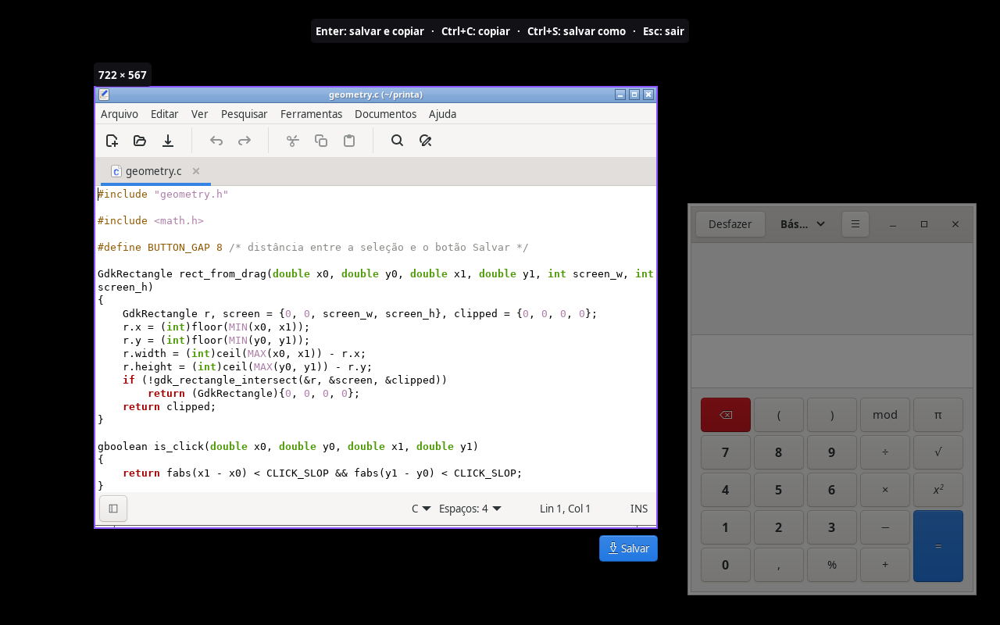

Picks a window in one click
Hover to highlight the window under the cursor, click to select it, frame included.
Click a window or drag a region, then press Enter: printa saves a PNG to ~/Pictures and copies it to the clipboard. Written in C with GTK3.

It freezes the screen, lets you pick what to keep, and gets out of the way.
Hover to highlight the window under the cursor, click to select it, frame included.
Drag a rectangle in any direction; the size in pixels follows the cursor.
The image is taken before the overlay appears, so open menus stay in the shot.
One key writes a PNG to your Pictures folder and puts the image on the clipboard.
Everything happens on the frozen screen. With nothing selected, Enter takes the whole screen.
Build it from source in under a minute. You need a C compiler and the GTK3 development files.
1. Install the build dependencies
$ sudo apt install build-essential libgtk-3-dev2. Build and install
$ git clone https://github.com/berdfandrade/printa.git
$ cd printa
$ make
$ sudo make installprinta is a plain command, so it fits wherever a command does.
Add a custom keyboard shortcut that runs printa in Cinnamon, GNOME on Xorg, or a hotkey tool such as sxhkd.
The saved path goes to stdout; the exit code is 0 on success, 1 on cancel.
$ f=$(printa -d 2) && notify-send "Saved" "$f"printa does one job. Here is what it leaves out today.